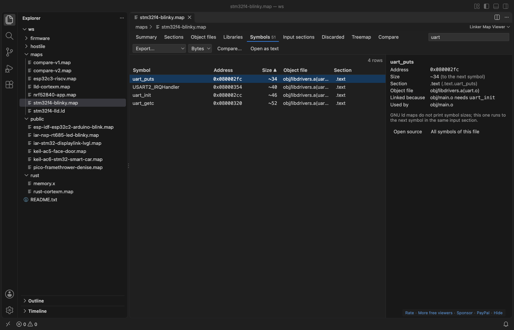

Open files in VS Code and Cursor / Binary, network and hardware
Find why a library object was linked into your firmware
GNU ld only takes an object file from a .a library when another file needs one of its symbols, and the map file records that reason. Linker Map Viewer opens the .map file in VS Code and shows it for each object file and symbol as a Linked because row, such as obj/main.o needs uart_init. With a cross reference table in the map, a Used by row lists every file that uses a symbol. All of it is free. Zovo Pro (USD 19 once) adds a size report for a pull request, with 3 free tries.
Free, MIT license. Extension ID zovo.zovo-linker-map-viewer, version 0.2.1. Needs VS Code 1.90.0 or newer.
Also free from Zovo: ELF Viewer & PE Viewer, VS Code Marketplace · Open VSX (Cursor, Windsurf).

Steps in VS Code
- Install Linker Map Viewer from the Marketplace, or press Ctrl+P (Cmd+P on macOS) and run
ext install zovo.zovo-linker-map-viewer. - Click the
.mapfile in the Explorer. It opens in Linker Map Viewer with the memory regions on the Summary tab. - Open the Libraries tab to see the size of each
.aarchive. Click a library to list its object files. - Click an object file. Its details show the size by section and a Linked because row, such as
obj/main.o needs uart_init. - Open the Symbols tab and type a name in the filter box, or a
/regex/. Click a symbol for its address, size, section, object file, Linked because and Used by. - Double-click a symbol or object file to open its source file in the workspace at the definition, then decide what to remove.
Where Zovo Pro saves time
The whole viewer is free, with no sign-in. That covers memory regions, the tables of sections, object files, libraries, symbols, input sections and discarded sections, the reasons, the treemap and the compare of two builds with CSV and Markdown export. A 206 MB map with 1.1 million symbols showed its full summary in 3 to 5 seconds in the release test.
Once you know why a library came in, the next step is to show the size change in a pull request. Size Report writes one Markdown page with region use and bars, the totals, the 20 biggest object files and symbols, and, when a compare is open, what changed against the older map. The other Pro tools write a size history of a folder of maps as CSV or Markdown and export every table of the map as JSON.
With Size Report (Zovo Pro)
- Open a compare first if you want the change against the older map in the report.
- Run "Linker Map: Size Report (Pro)" from the Command Palette or the ... menu of the open map, or right-click the
.mapfile in the Explorer and pick "Zovo Pro: Size report". - Pick where to save the page. A try counts only when the file is written.
Size Report works 3 times on your computer before it asks for a license, and a try counts only when you get a result. Opening a file shows no popup and no countdown.
Zovo Pro costs USD 19 once. It is not a subscription, and it turns on the Pro tools in every Zovo extension, not only Linker Map Viewer. After a card payment (Stripe) your license key shows on the next page. In VS Code, run "Zovo Pro: Enter Zovo Pro license key" from the Command Palette and paste it. The key is checked on your computer, with no network call. With GitHub Sponsors, pick the "$19 one time" tier, then run "Zovo Pro: I already paid: unlock with GitHub Sponsors" and sign in with the same GitHub account. With PayPal, send USD 19 with "Zovo Pro" in the note and the key comes by email within a day.
A team of 5: USD 59 once, by card or by PayPal. Every rule and every Pro tool is on the Zovo Pro page.
Steps in Cursor, Windsurf or VSCodium
- Open the Extensions view with Ctrl+Shift+X (Cmd+Shift+X on macOS).
- Search for
zovo.zovo-linker-map-viewerand click Install. Cursor, Windsurf and VSCodium install from Open VSX, where it is published aszovo/zovo-linker-map-viewer. - If your editor has no gallery, download the .vsix from the Open VSX page and run "Extensions: Install from VSIX...".
- Then use it the same way as in VS Code.
What Linker Map Viewer handles
- GNU ld maps from gcc, arm-none-eabi-gcc, ESP-IDF, Zephyr, the Pico SDK, STM32CubeIDE, avr-gcc and RISC-V, with archive reasons and cross references.
- LLVM lld maps from clang and Rust embedded.
- IAR ILINK 7.x and 8.x maps and Arm Compiler armlink 5 and 6 (Keil MDK) maps.
- Maps of 200 MB and more, read in a background thread.
What it does not do
- The Linked because reason comes from the archive member section of GNU ld maps. lld, IAR and Keil maps do not have it.
- Only objects from
.aarchives get a reason. Object files you list on the link line are always linked. - The Used by list needs a map with a cross reference table, which GNU ld writes when you add its cref option.
- GNU ld maps list global symbols without sizes. A size marked ~ runs to the next symbol. Static symbols are not in the map.
Other options
- The map as text. Every GNU ld map starts with an "Archive member included to satisfy reference by file (symbol)" section. Search it in any text editor.
- Amap. A free desktop viewer for GNU ld map files that lists sections, object files and symbols by size.
Install counts and Open VSX status were checked on 13 November 2026. Descriptions in quotes are the extensions' own.
Questions
How do I make the linker write a map?
Add -Wl,-Map=firmware.map to the GCC or clang link line. ESP-IDF, Zephyr, the Pico SDK and PlatformIO already write one into the build folder.
Why is a whole driver linked when I call one function?
The linker takes whole object files from an archive. If uart.o holds ten functions and you call one, all ten come in unless you build with function sections and let the linker drop unused sections.
Can I see what grew between two builds?
Yes, for free. Click Compare... and pick the map of the older build. See Compare two linker map files.
Does it work in Cursor or Windsurf?
Yes. Cursor, Windsurf and VSCodium install extensions from Open VSX. Search for the extension in their Extensions view and install it there.
More about Linker Map Viewer
Read the Linker Map Viewer page for every feature and setting, or the source code on GitHub.
Related guides
- ELF Viewer & PE Viewer on the VS Code Marketplace (also on Open VSX). Shows headers, sections and imports of ELF, PE and Mach-O files.
- Analyze a linker map file in VS Code
- Compare two linker map files and see what grew
- Use a hex editor in VS Code
- Open a binary file in VS Code
Support this work
If this extension saves you time, you can support the work on GitHub Sponsors. Monthly tiers start at $5, and one-time tiers start at $15. Sponsorship is optional, and the tool works the same without it.
Need your format supported?
Open a format request with a sample file, and I reply there whether it can be done. For USD 299 once, through this GitHub Sponsors tier, I add your file format or a missing feature to this extension, with tests, within 7 days.